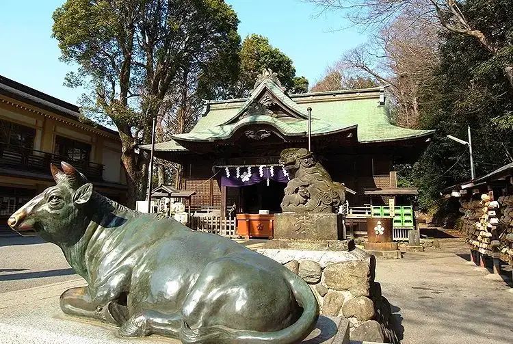

Kunitachi, Tokyo: things to do, food and stays
Kunitachi · Tokyo
Kunitachi
Highlighted on the Tokyo map.

Sights
Dining
Unicorn Bakery
ユニコーンベーカリー

Sweets and bakery shop in Kunitachi, Tokyo.
Rozina Sabou
ロージナ茶房

Cafe in Kunitachi, Tokyo.
Una Chan
うなちゃん

Seafood restaurant in Kunitachi, Tokyo.
Kunitachi Tea House

Cafe in Kunitachi, Tokyo.
Bakushu Do KASUGAI Reservation
麦酒堂 KASUGAI

Izakaya or bar in Kunitachi, Tokyo.
Patisserie cafe VIVANT

Cafe in Kunitachi, Tokyo.
Petit Ange Kunitachi
プチ・アンジュ 国立

Sweets and bakery shop in Kunitachi, Tokyo.
Marushin Chuka Soba
丸信中華そば

Noodle restaurant in Kunitachi, Tokyo.
Fukagawa Tsuribune
深川つり舟

Seafood restaurant in Kunitachi, Tokyo.
Italian Kozou
いたりあ小僧

European restaurant in Kunitachi, Tokyo.
Aoharu Gyoza
あおはる餃子

Chinese or Asian restaurant in Kunitachi, Tokyo.
Bar N Kirao Kunitachi ten Reservation
バーン・キラオ 国立店

Sweets and bakery shop in Kunitachi, Tokyo.
Meibutsu Sutadon Sapporo Ramen Kunitachi honten
名物 スタ丼 サッポロラーメン 国立本店

Noodle restaurant in Kunitachi, Tokyo.
Kanmi Yui
甘味ゆい

Sweets and bakery shop in Kunitachi, Tokyo.
Korai
香来

Chinese or Asian restaurant in Kunitachi, Tokyo.
Kyouya Shokudo
きょうや食堂

Japanese restaurant in Kunitachi, Tokyo.
Akari Bakery
アカリベーカリー

Sweets and bakery shop in Kunitachi, Tokyo.
Kunitachi Pasta Factory

European restaurant in Kunitachi, Tokyo.
Nanjing Tei Kunitachi ten
南京亭 国立店

Chinese or Asian restaurant in Kunitachi, Tokyo.
Yokohama Ramen Hanakasaya
横浜ラーメン 花笠家

Noodle restaurant in Kunitachi, Tokyo.
Ei Fuku
英福

Noodle restaurant in Kunitachi, Tokyo.
BORTON
ボートン

Cafe in Kunitachi, Tokyo.
Isshin An
一真庵

Sweets and bakery shop in Kunitachi, Tokyo.
Pho NANA Reservation
フォーNANA

Cafe in Kunitachi, Tokyo.
RISTORANTE BUNRYU Kunitachi ten
文流 国立店

European restaurant in Kunitachi, Tokyo.
PIZZETTO

European restaurant in Kunitachi, Tokyo.
Kunitachi Curry Dokoro Indian
国立カレー処 いんでぃ庵

Japanese restaurant in Kunitachi, Tokyo.
Gatsuri Hanten Tengokuya
ガッツリ飯店 天極家

Noodle restaurant in Kunitachi, Tokyo.
La Rencontre
ランコントル

European restaurant in Kunitachi, Tokyo.
Daikokuya
門前そば 大黒屋

Noodle restaurant in Kunitachi, Tokyo.
Chuka Soba Shodai Nobu
中華そば 初代 修

Noodle restaurant in Kunitachi, Tokyo.
GURIRIN CAFE

Cafe in Kunitachi, Tokyo.
Yakiniku Tei Inami
焼肉亭 いなみ

Meat restaurant in Kunitachi, Tokyo.
Awaji Shima Burger Kunitachi yaho ten
淡路島バーガー 国立谷保店

Izakaya or bar in Kunitachi, Tokyo.
Pan de Campagne
パン・ド・カンパーニュ

Sweets and bakery shop in Kunitachi, Tokyo.
Teuchi Soba Shun
手打ちそば 俊

Noodle restaurant in Kunitachi, Tokyo.